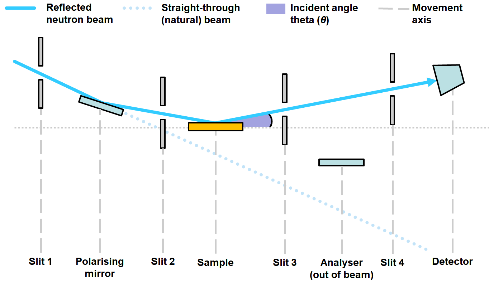

Reflectometry Design
The aim of the reflectometer project is to allow users of the reflectometers to have a common and easy experience to set the position of items on the beam line. The setup is fairly complex because there are multiple items that need to be coordinated to make a measurement. This page should give an overview of what is going on and the user cases that are needed.
The image below shows a schematic of the inside of the block house for a typical reflectometer. (Note that all angles in the diagram are strongly exaggerated for clarity)

The beam travels from the neutron target on the left to the detector on the right, bouncing off a sample along the way.
Theta is the main parameter we care about in reflectometry experiments.
Different experiments may require different beamline setups which may affect the beam path. (e.g. adding a mirror in this instance)
Whenever the beam path is modified, we want equipment to automatically track the beam as appropriate for the currently active configuration. Coordinating motion at the beamline level in this way is the primary purpose of our reflectometry system.
Components in a mode
Table of our understanding for each mode what is in the beam and what is tracking the beam. States are:
O: Out of the beam
I: In the beam but not tracking it
T: In the beam and tracking it
Mode |
S1 |
Polariser |
S2 |
sample stack |
ideal sample point |
S3 |
analyser |
S4 |
Detector |
|---|---|---|---|---|---|---|---|---|---|
NR (Neutron reflecting) |
T |
O |
T |
I |
T |
T |
O |
T |
T |
polarised |
T |
T |
T |
I |
T |
T |
O |
T |
T |
In sim language
Mode | S1 Height above beam | Polariser angle and height above
Questions
Answered
Is the ideal sample point x position fixes?
Yes. The beam coming in will hit any pre-sample active components and the height of the sample point is the point at which the beam reaches this x coordinate.
I think each mode of operation sets up fixed rules and relations and this is what we need to capture.
We need to calculate both the positions based on composite parameters and composite parameters based on the positions of the components, is this right?
Yes, it would be strange not to have this readback
What happens if the beam having hit the super mirror does not hit the sample axis?
apart from pathological cases, beam going straight up or backwards, there is always a point that the sample axis is hit
What happens if the detector is not looking at the sample point?
Nothing, but a warning in this case would be useful.
Does the beam always go forwards?
Yes, on reflectometers the beam always goes forward.
Are there any corrections to the idealised model, at that level?
No
What does an analyser do to the beam? Is it an active component? How does it affect the measurement of theta?
Yes it is an active component on some beam lines (depends on type). It doesn’t effect the measurement of theta; although if you are calculating the readback the outgoing beam goes to the analyser not the detector.
How are slits measured (along the arc or along there length)?
In the end it doesn’t really matter but they are measured along their length.
Room coordinates are these ok as we defined them?
Maybe, they should be the same as Mantid default.
Coordinates: according to IDFs, ZYX on
INTER,SURF,OFFSPECis XZY onCRISP,POLREF. We use the former. Is this a problem?Convention from
INTERetc. is correct.
Currently, the theta readback displays the angle to the detector but if the detector is set to be above the beam the readback is still to the detector and so the theta sp and readback do not agree. What should we do:
Don’t allow displacement relative to the beam to be set on components which interface with Theta
Use the difference between the beam intercept and the position for the setpoint and add this to the read back position
Do nothing this is the correct behaviour and is telling the instrument scientist they are not measuring what they think they are
Answer 2
Will you want to do individual moves while another move is going on?
Yes
Answered 06/2020
Beam block, turn on beam block mode what do you expect to happen? What can we control - yes I know this is th 3rd iteration of this -The way they use it is to set gaps, horizontal and vertical, then turn off the gap calcs. Then move the non-blocking blade as far as possible out of the way and then move the blocking blade to desired position, e.g. South blade to -1.
On CRISP the bottom blade needs to track the beam
In blocking mode it should have an offset from the beam
Change engineering correction based on mode how does this work
Already thought internally about this and solution is read backs update and then they will be shown to be not in position. If parameter is in mode position is corrected next move, if not they will continue to be shown to be wrong.
CRISP: What is the position for S4? (found it in Mantid IDF, but values differ from those in VI - assumption is VI is correct)
Vi is correct
Do we need to reflect SP of motors into Reflectometry server
Alarm on sp not same as RBV is good. OK?
Would like the explanation to appear in the status box ticket added but low priority #5486
#5456: Are there lots of configs and scripts to convert, which ones?
Do this together when transferring POLREF but configs needs are anything ending
_HCMor_SCMand all sub configsSUB_POLREFand polref flipper component to see the flipper mode.
Can we have the dance script for POLREF?
yes called dance_gcl in network scripts area under user test
Ask about vertical CHI for FOM/SAMPLE again
Sample:
In horizontal mode:
sample angle - phi
sample roll - psi
sample yaw - chi
In vertical mode:
sample angle - chi
sample roll - psi
sample yaw - phi
Detector:
In horizontal mode:
detector angle - theta
In vertical mode:
detector angle - bench slide
Super mirror:
In horizontal mode:
straight
In vertical mode:
same as before but PSI is PSI + 90 we would like this to be 0 if it is easy
Ask about where horizontal/vertical gaps should be and what labels on vertical config
More generally how does this apply to all components
Keep vertical as vertical for slits but collimation slits needs to be indicated. Ideally swapping in OPI swap positions of horizontal and vertical slits
Need to add parameters
s#hgto run angle. Footprint calculator needs to be setup for vertical slits
Are there different park position dependent on the mode
No (apart from laser mode)
How to get pixel 280 out is it a numbered spectra
just a specific spectra number
Clash conditions on POLREF
Guide rails on flipper stage and slit 2 clash with sample table (including something on the table)
Slit 2 height stage hits a cross bar if too low
j1, j2 and h are all related because horizontal stage can fall off jacks if j1 or j2 are different
Homing of motors what can and what can’t
all apart from bench jacks
Bump strips what does it do
Switches off all motor amplifiers but this means that the motors relax and so after this has happened you need to reposition all motors to where they were. In SECI this mean pressing the move button. There is also a message that appears on both the motor table and on the refl server saying that this has happened. Added ticket
Bender offspec analyser: Which motor drives chi? Do you need to change motor settings?
Driven by the Huber motor